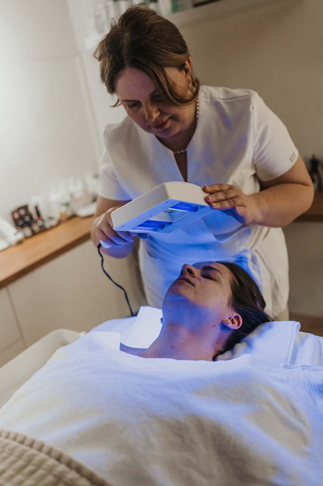

Služby a ceník
Služby, ceník a rezervace vašeho kosmetického ošetření
Každé ošetření začíná diagnostikou — teprve na základě toho, co vaše pleť ukazuje, sestavím péči na míru. Pokud je to vhodné, součástí ošetření je i práce studenou plazmou a ultrazvukovou špachtlí.
Tři značky, jedna logika
Někdy pleť potřebuje ošetření na míru, jindy precizní protokol
Pracuji se třemi značkami a každá má v systému svou roli. Natinuel je skládačka — peelingy, séra a masky kombinuji při každé návštěvě podle toho, co vaše pleť právě ukazuje. DIBI Milano a THESERA pracují v přesných protokolech, ověřených krok za krokem. Někdy pleť potřebuje ošetření na míru, jindy precizní protokol. Co z toho, rozhoduje diagnostika — ne katalog.
Vyberte si ošetření a rezervujte si termín přes online rezervační systém (objednání online není možné na termíny po 15. hodině). Pokud máte zájem o pozdější termín, nebo vám online rezervace nevyhovuje, kontaktujte mě na 605 134 301 nebo přes Messenger. Pokud budu pracovat s klienty, ozvu se co nejdříve zpět.

Spolupráce
Jak společně pracujeme
Na začátku si řekneme, co chcete řešit, jak často chcete chodit a co je reálné. Na základě diagnostiky sestavím plán — kam budeme pleť směřovat a jakými kroky.
Plán se přizpůsobuje. Někdy pleť reaguje na stres, hormony nebo změnu prostředí. Někdy je potřeba zareagovat na výkyvy. To je normální — důležité je, že víme, kam směřujeme.
Pokud plánujete estetický zákrok, dejte mi vědět včas. Když pleť na zákrok připravíme, výsledek bude výrazně lepší a trvalejší.
Ceník — 01
Seznamovací ošetření
Pro nové klientky. Každá spolupráce začíná tady. Diagnostika, rozbor stavu pleti a první šetrné ošetření. Pleť, kterou vidím poprvé, nikdy nezatěžuji — nejdřív ji potřebuji přečíst.
Seznamovací ošetření
Seznamovací ošetření
Jdete ke mně poprvé?
Nevíte si rady, které ošetření je pro vás to pravé? Nemusíte to řešit. To je moje práce.
Možná máte pocit, že už jste zkusila všechno. Že děláte všechno správně, a pleť stejně nespolupracuje. Že se v té záplavě rad a produktů ztrácíte.
Začínáme úplně jinak. Diagnostikou.
Než cokoliv aplikuju, potřebuju vaši pleť přečíst. Vidět, v jakém stavu opravdu je. Projdeme spolu, jak vaše pleť reaguje. Co ji oslabuje. Co potřebuje. Samotné ošetření pak stavím záměrně šetrně — pleť, kterou vidím poprvé, nikdy nezatěžuji intenzivní stimulací. Nejdřív potřebuji vidět, jak reaguje. Teprve potom má smysl plánovat další kroky.
Odejdete s ošetřením. A s plánem. S jasnou představou, co vaše pleť potřebuje a co má smysl.
Objednat →Ceník — 02
Stabilizační ošetření
Zklidnění, obnova kožní bariéry, hloubková hydratace, snížení podráždění. Pleť musí být ve stavu, kdy dokáže na péči správně reagovat. Základ, bez kterého další kroky nedávají smysl.
Stabilizace Natinuel
Stabilizace Natinuel
Na Natinuelu miluji, že je jako skládačka. Peelingy, séra, masky — a z nich se skládá přesně to, co vaše pleť právě potřebuje.
Ošetření pro pleť, která má problém. Akné v dospělosti, rosacea, podráždění, narušená bariéra. Stavy, které je potřeba nejdřív zklidnit a stabilizovat, než se dá jít dál.
Cílem není pleť přetížit aktivními látkami ani ji zlomit silou. Nejdřív zklidnění, posílení bariéry, návrat rovnováhy, ze které se dá vycházet. A protože se stav pleti v čase mění, mění se i skladba ošetření — pokaždé podle toho, co pleť aktuálně ukazuje. Žádná šablona.
Základ, bez kterého ostatní kroky nedávají smysl.
Objednat →
Defence — zklidnění reaktivní pleti
Defence — zklidnění reaktivní pleti
Pro pleť, která se brání. Zarudlá, napjatá, podrážděná. Reaguje skoro na všechno a ztrácí klid.
Ošetření zklidňuje zarudnutí, mírní pocit pnutí a suchosti a posiluje oslabenou bariéru. Aktivní látky se díky technologii niozomů dostávají hlouběji, kde mají skutečně působit. Bez parfemace, šetrné i k té nejcitlivější pleti.
Pleť je klidnější, vyrovnanější a líp chráněná před tím, co ji dráždí.
Objednat →
THESERA H — hloubková buněčná hydratace
THESERA H — hloubková buněčná hydratace
Pro pleť, která je suchá jinak než jen na povrchu. Matná, napjatá, unavená. Krémy jí ulevují na pár hodin, ale problém se vrací — protože nedostatek vlhkosti není v krému, je v buňkách.
Ošetření pracuje s aquaporiny — vodními kanálky v buněčných membránách, které řídí, kolik vody se do buněk skutečně dostane. Postupnými kroky se aktivují: zahřátí pleti, okysličení mikrobublinkami, koncentrované ampule se slaností odpovídající tělesným tekutinám, aby pleť aktivní látky maximálně přijala. Na závěr se vlhkost uzamkne, aby v pleti zůstala.
Výsledek je okamžitě viditelný — vypnutá, rozzářená pleť. Ale podstata je hlubší: pleť, která zase umí hospodařit s vodou. V klinickém testování bez jediné podrážděné reakce, takže je vhodné i pro citlivou pleť.
A je to zároveň podmínka pro všechno další: pleť s funkčním vodním hospodařením má kapacitu reagovat na regeneraci i biostimulaci. Proto hydratace nikdy není „jen hydratace“.
Objednat →Ceník — 03
Regenerace
Obnova a posílení buněk před biostimulací. Stimulace má smysl jen tehdy, když na ni buňky mají kapacitu — regenerace jim ji vrací. Pracuji s peelingem RX50 a mikroneedlingem RxCarboxy, stejně jako v biostimulaci — rozdíl je ve volbě sér. Tady je cílem obnova, ne výkon.
RX50 + regenerační séra
RX50 + regenerační séra
Peeling nové generace v regenerační roli. Šetrně obnovuje pleť — pomáhá jí zbavovat se odumřelých buněk, podporuje buněčnou energii a vrací svěžest, aniž by narušil bariéru. Díky olejové struktuře není pleť po ošetření stažená ani podrážděná; součástí je revitalizační masáž.
Séra volím regenerační — cílem je obnova a posílení buněk, ne jejich maximální výkon. Pleť po ošetření není vyčerpaná, je připravenější.
Tohle je krok, který připravuje půdu. Zregenerovaná pleť má kapacitu odpovědět na biostimulaci naplno — a to je rozdíl mezi ošetřením, které pěkně vypadá týden, a výsledkem, který vydrží.
Lze provádět po celý rok.
Objednat →
RxCarboxy + cílená séra
RxCarboxy + cílená séra
Přizpůsobivé ošetření, které může být regenerační i stimulační — podle toho, v jaké fázi je vaše pleť.
Revitalizační báze pracuje na více úrovních: lepší okysličení tkání, antioxidační ochrana, obnova bariéry. Aktivní séra k ní vybírám podle vašeho aktuálního stavu — někdy pleť potřebuje zklidnit a zregenerovat, jindy je připravená na hlubší biostimulaci a podporu kolagenu.
Jedno ošetření vytržené z kontextu pleť dlouhodobě nezmění. Pracuju s vámi v návaznosti — podle toho, jak pleť reaguje. To je jediná cesta k výsledku, který vydrží.
Objednat →
ProCellular — regenerace a obnova
ProCellular — regenerace a obnova
Někdy pleť prostě potřebuje vydechnout. Po náročném období, po slunci, po čase, kdy toho zvládla víc, než měla.
ProCellular je mimořádné ošetření pro skutečně namáhanou pleť. Hluboká regenerace s probiotickým komplexem, který obnovuje bariéru, posiluje přirozenou obranu pleti a vrací jí rovnováhu. Zklidňuje, vyživuje a dodává sílu zevnitř.
Tam, kde běžná péče nestačí. Pleť je klidnější, pevnější, jako po pořádném odpočinku.
Vhodné i jako podpora po zákrocích estetické medicíny.
Objednat →Ceník — 04
Biostimulace
Cílená stimulace: kolagen, pevnost, hutnost pleti. Nejsilnější nástroje, které mají smysl teprve tehdy, když je pleť zdravá, stabilní a zregenerovaná. Proto je tahle fáze poslední — ne první.
Acid Infusion — bioaktivace a obnova
Acid Infusion — bioaktivace a obnova
Pro pleť, která ztratila svěžest a schopnost se obnovovat. Nerovnoměrná struktura, mdlý tón, první i pokročilejší známky stárnutí — chronologického i toho ze slunce.
Ošetření staví na kombinaci čistých kyselin a dermoaktivních látek. Kyseliny normalizují obnovu pokožky a šetrně odstraní to, co pleť brzdí. Bioaktivní složky pak stimulují vitalitu a restrukturalizaci — pleť nedostane jen povrchové vyhlazení, ale impuls k vlastní obnově.
Není to agresivní peeling. Je to řízená bioaktivace, kterou lze provádět po celý rok — vhodná pro každý typ pleti, od mladší pleti jako prevence až po zralou pleť, kde pracuje na opravě a antioxidační ochraně.
Nejsilnější výsledek přináší v kúře, kde na sebe jednotlivá ošetření navazují v rytmu, ve kterém pleť stíhá odpovídat.
Objednat →
Red Collagen
Red Collagen
Pro pleť, která ztrácí pevnost a kontury. Tam, kde chcete podpořit hustotu a vypnutější vzhled, ale šetrně, bez jehel, bez rekonvalescence.
Ošetření spojuje aktivní séra s červeným světlem a řízeným teplem kolem 42 °C. V těchto podmínkách se aktivní složky aktivují přímo v pleti a vytvářejí prostředí příznivé pro kolagen. Pleť působí pevněji, kontury výraznější, póry jemnější.
Pro zralou pleť, ztrátu pevnosti a oblasti tváří, čelisti a krku, které ztratily napětí. Vhodné i pro citlivější pleť.
Objednat →
RX50 synergický peeling
RX50 synergický peeling
Peeling nové generace pro každé roční období. I v létě.
Šetrně obnovuje pleť — pomáhá jí přirozeně se zbavovat odumřelých buněk, podporuje tvorbu kolagenu a vrací svěžest. A přitom nenarušuje bariéru. Díky olejové struktuře není po něm pleť stažená ani podrážděná; součástí je revitalizační masáž.
Pro pleť, která potřebuje rozjasnit, vyhladit a nastartovat — bez agrese a bez nutnosti schovávat se před sluncem.
Objednat →
RxCarboxy + biostimulace
RxCarboxy + biostimulace
Přizpůsobivé ošetření, které může být regenerační i stimulační — podle toho, v jaké fázi je vaše pleť. Rozdíl je v hloubce: aktivní látky zapracovávám mikroneedlingem, takže se dostanou hlouběji a pracují intenzivněji.
Séra volím podle vašeho stavu — někdy je cílem hloubková regenerace, jindy biostimulace a tvorba kolagenu.
Samostatné ošetření udělá hodně, ale skutečný a trvalý výsledek vzniká až v návaznosti. Stavíme péči v čase, ne v jedné návštěvě.
Provádí se pouze v období říjen–duben.
Objednat →Ceník — 05
Kúry
Rozestup 9 až 14 dnů je klíčový. Další ošetření navazuje ve chvíli, kdy je pleť na vrcholu biologické odpovědi. Při delší pauze se pleť vrací ke svému běžnému stavu a efekt se přestává sčítat
Kúru provádím maximálně jednou ročně. Víc není potřeba. Intenzivní stimulace má smysl jako impuls, ne jako trvalý stav — zbytek roku pleť výsledky udržuje a prohlubuje běžnou péčí.
Cena ošetření v kúře začíná na 2 600 Kč. Přesnou skladbu i cenu sestavuji individuálně podle diagnostiky a před zahájením ji s vámi vždy projdu.
Kúry nemají online rezervaci — pro konzultaci mě kontaktujte na 605 134 301 nebo přes Messenger.